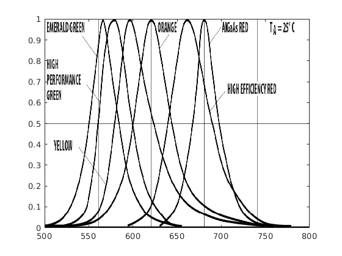
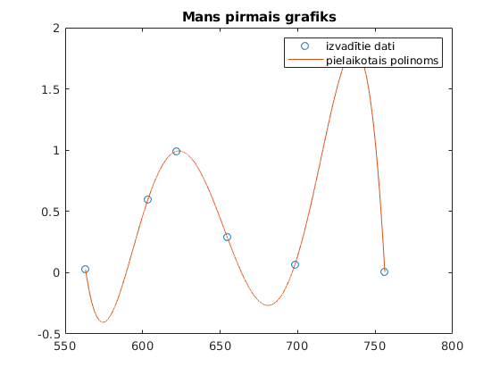
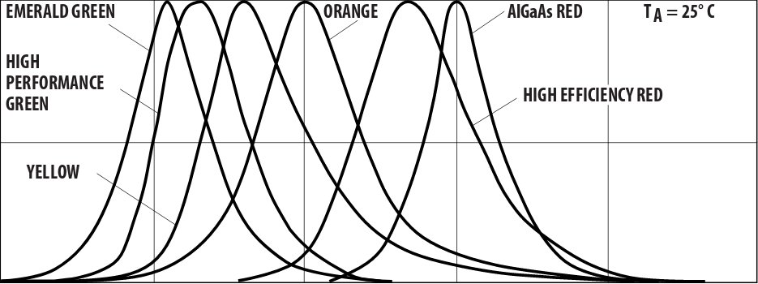

1.laboratorijas darbs
Contents
Mērījumu datu apstrāde
Mērķi:
- Iemācīties apstrādāt mērījumu datus
- Iemācīties lietot polyfit,polyval
- Iemācīties veidot darba atskaites
- izmantojot "publish"
Darba programma:
A = imread('grafiks_2.jpg'); figure(1),image([500 800],[1 0],A) set(gca,'YDir','normal') [x,y] = ginput(6); x1 =min(x):0.01:max(x); C = polyfit(x,y,5); y1 = polyval(C,x1); figure(2),plot(x,y,'o',x1,y1) figure(2),title('Mans pirmais grafiks') figure(2),legend('izvadītie dati','pielaikotais polinoms')
Warning: Polynomial is badly conditioned. Add points with distinct X values, reduce the degree of the polynomial, or try centering and scaling as described in HELP POLYFIT. 

Secinājumi:
Secinājumos man sanāca, ka izvadītais grafiks gandrīz sakrīt ar iz vadītiem datiem.